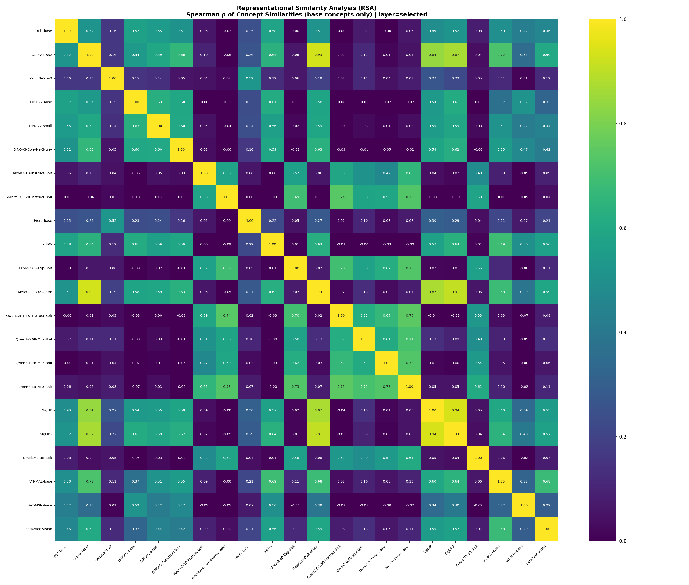

March 2026
The Platonic Representation Hypothesis (PRH) predicts that models trained on different modalities converge toward a shared representational geometry. We test this claim on Scale250, a 250-concept, source-balanced benchmark evaluated on a 25-model panel spanning language models, self-supervised vision models, contrastive vision-language encoders, and autoregressive VLMs. The result is not absence of convergence but three distinct modes. Within-family convergence is strong: language-language RSA averages 0.6143 (28/28 pairs significant after FDR correction) and VLM-VLM agreement reaches 0.8938. Bridge convergence is real but vision-anchored: both contrastive VLMs (vision-minus-language gap 0.4695) and autoregressive VLMs (gap 0.4718) sit far closer to vision than to language, and this pattern is architecture-independent. Cross-modal convergence is weak: language-image RSA averages 0.0199, with only 15 of 80 language-vision pairs surviving FDR correction. This three-mode taxonomy is robust across analyses. Aligned-layer evaluation reveals that shared structure peaks at mid-to-late network depth (d75) rather than the terminal selected layer, suggesting convergence is depth-dependent rather than a final-layer property. Language-model scale (0.6B–4B) shows no monotonic relationship with cross-modal alignment (Spearman ρ = -0.0952). CKA triangulation preserves the same family ordering (Pearson 0.7229, Spearman 0.7050 agreement with RSA). A benchmark-sensitivity analysis shows that expanding the concept set from 20 to 250 on the same model panel collapses language-image RSA from 0.2418 to 0.0199 while preserving within-family structure, demonstrating that narrow benchmarks can materially overstate cross-modal agreement. What survives the stronger measurement regime is family-local convergence, vision-anchored bridge behavior, and depth-dependent overlap rather than broad language-image convergence.
Keywords: Platonic Representation Hypothesis, representational similarity analysis, centered kernel alignment, cross-modal convergence, benchmark design, layer alignment, vision-language models
The Platonic Representation Hypothesis (PRH) asks whether models trained on different modalities converge toward a shared internal geometry because they are all modeling the same world (Huh et al., 2024). In its strong form, the hypothesis predicts that modality should matter less and less as capability grows: a language model and a vision model, trained on different data with different objectives, should still come to organize concepts similarly.
That is a stronger claim than task transfer or interface compatibility. It is a claim about inevitability in representation itself. The relevant question is therefore not whether some cross-modal signal can be detected on a favorable benchmark, but whether that signal survives a harder and more balanced measurement regime. This paper provides that test and finds that the answer is more structured than a simple yes or no: what emerges is a taxonomy of three distinct convergence modes rather than broad cross-modal alignment.
The central risk in this literature is not only false positives. It is effect-size inflation from narrow, source-skewed, or otherwise convenient benchmarks. A study can detect genuine cross-modal signal while still overstating how broad or durable that signal is. Recent work on metric calibration (Groger et al., 2026) has shown that standard representational similarity measures can be confounded by network scale, and benchmark design studies in vision-language evaluation (Dixit et al., 2023) have demonstrated that reported performance gains can be substantially inflated by distributional artifacts.
The present study addresses this concern through benchmark design rather than metric calibration. The model roster is held fixed so that the experimental work is done by measurement design rather than by changing the panel. The concept benchmark expands to 250 base concepts, compounds are removed from the main confirmatory claim, source balance is enforced within concept, and depth, robustness, and metric-triangulation analyses are specified as part of the study rather than as an afterthought.
The study evaluates a 25-model panel on Scale250, a structured 250-concept benchmark with strict within-concept source balance. The core panel consists of 22 models: 8 language models, 10 self-supervised vision models, and 4 contrastive vision-language encoders. An architecture extension adds 3 autoregressive VLMs to test whether bridge-model behavior is architecture-dependent.
The evidence package combines a selected-layer evaluation, an aligned five-layer depth profile, image bootstrap confidence intervals, Mantel permutation tests with FDR correction, prompt-sensitivity analysis, CKA triangulation, and a benchmark-sensitivity analysis comparing Scale250 with an earlier 20-concept benchmark on the same model panel.
The study is organized around five findings, each supported by its own evidence base: (1) benchmark expansion collapses the cross-modal estimate; (2) convergence is family-local; (3) bridge models are vision-anchored across architectures; (4) shared structure is depth-dependent; (5) language-model scale does not rescue cross-modal alignment.
The study makes five contributions:
The paper is organized around six questions:
The closest conceptual antecedent is the Platonic Representation Hypothesis of Huh et al. (2024), which argues that sufficiently capable language and vision models exhibit increasing geometric agreement across modalities. That work is valuable because it turns a philosophical intuition into an empirical one: convergence becomes a measurement problem rather than a slogan. The present paper addresses a narrower question. Instead of asking whether convergence can be shown on large curated setups, it asks how much of the effect survives when a small local benchmark is replaced by a much broader confirmatory one.
Recent work by Groger et al. (2026) has shown that standard representational similarity metrics can be confounded by network scale: increasing model depth or width systematically inflates similarity scores, and apparent global convergence weakens substantially after calibration. They propose an Aristotelian Representation Hypothesis in which convergence is limited to local neighborhood structure rather than global geometry. The present paper arrives at a compatible conclusion through a different route. Rather than calibrating the metric, we broaden the benchmark and find that cross-modal convergence weakens by an order of magnitude while within-family structure is preserved.
Our measurement frame sits inside the broader literature on representational similarity. RSA (Kriegeskorte et al., 2008) compares the relational geometry of concept representations rather than their raw coordinates, which makes it especially useful when embedding dimensions differ across model families. Canonical-correlation approaches such as SVCCA (Raghu et al., 2017) and PWCCA-style analyses (Morcos et al., 2018) ask whether two representations span similar subspaces even when their coordinates are not directly aligned. CKA (Kornblith et al., 2019) adds a kernel-based alternative that is invariant to isotropic scaling and robust to differences in representation width.
This paper treats metric triangulation as part of the contribution rather than an optional appendix. RSA remains the main inferential target because the research question is about shared concept geometry, but linear CKA is used as a second lens over the same concept-by-feature matrices. RSA compares rank-ordered similarity structure in representational dissimilarity matrices; CKA compares centered alignment between feature spaces. Agreement between them strengthens trust in the direction of the result, not in any single numeric magnitude.
The bridge-model question sits in a specific multimodal literature. Contrastive image-language models such as CLIP (Radford et al., 2021) and SigLIP (Zhai et al., 2023) are designed to make language and image embeddings interoperable. The SigLIP2 family (Tschannen et al., 2025) extends this with self-supervised and captioning-based objectives. But interoperable interfaces do not automatically imply modality-neutral internals. Liang et al. (2022) demonstrated that contrastive multimodal models embed different modalities in geometrically separated regions of the shared space – the modality gap – which persists from initialization through training. A dual-encoder can align tasks while still preserving strong vision-anchored structure in its image tower. This distinction is central to the present paper because the four contrastive VLMs in the panel are all evaluated through their image-side representations.
Recent interpretability work has begun probing the internal structure of multimodal models layer by layer. Neo et al. (2024) applied mechanistic interpretability methods to LLaVA and found that visual question answering exhibits mechanisms similar to in-context learning, with visual features showing significant interpretability when projected into the embedding space. Jiang et al. (2024) demonstrated that layer-wise representational similarity in transformers follows a characteristic progression, with simple cosine-based measures aligning well with CKA across depth. These findings provide context for the present paper’s depth analysis, which asks whether cross-modal convergence is stronger at mid-to-late aligned layers than at the terminal selected layer.
This paper also contributes to a tradition of benchmark design and measurement clarification in vision-language evaluation. Thrush et al. (2022) showed that state-of-the-art models performed near chance on Winoground, a compositionality benchmark, despite strong reported performance on simpler evaluations. Dixit et al. (2023) demonstrated that compositionality improvements reported on several benchmarks were substantially overestimated due to distributional artifacts in the negative examples. These studies establish a broader pattern: reported effect sizes in vision-language evaluation depend materially on benchmark construction. The present paper contributes a parallel finding for representational geometry: cross-modal convergence estimates depend materially on concept-set breadth and source balance.
The full study is built around a simple contract: keep the model panel fixed, scale the concept benchmark aggressively, and separate the primary confirmatory benchmark from supporting analyses.
Table 1: Scale250 study design.
| Component | Current experiment |
|---|---|
| Core model panel | 22 models |
| Model families | 8 language, 10 vision SSL, 4 vision-language |
| Secondary architecture extension | +3 autoregressive VLMs (25 models complete overall) |
| Primary concept set | 250 base concepts |
| Concept design | stratified a priori, 10 strata x 25 concepts |
| Compound concepts in primary set | none |
| Images per concept | 15 |
| Per-concept source balance | 5 ImageNet, 5 Open Images, 5 Unsplash |
| Text templates extracted | baseline3 (t0, t1,
t2) |
| Main layer protocols | selected-layer baseline and aligned5 |
| Bootstrap | 300 draws, 10 images per concept, with replacement |
| Significance test | 3,000-permutation Mantel, BH FDR |
| Secondary metric | linear CKA on concept-by-feature matrices |
The core 22-model roster is fixed throughout the main study. This is deliberate. Holding the panel constant lets benchmark design and analysis protocol do the experimental work.
Table 2: Model roster.
| Family | Models |
|---|---|
| Language (8) | Falcon3-1B-Instruct-8bit, Granite-3.3-2B-Instruct-8bit, LFM2-2.6B-Exp-8bit, Qwen2.5-1.5B-Instruct-8bit, Qwen3-0.6B-MLX-8bit, Qwen3-1.7B-MLX-8bit, Qwen3-4B-MLX-8bit, SmolLM3-3B-8bit |
| Vision SSL (10) | BEiT-base, ConvNeXt-v2, DINOv2-base, DINOv2-small, DINOv3-ConvNeXt-tiny, Hiera-base, I-JEPA, ViT-MAE-base, ViT-MSN-base, data2vec-vision |
| Vision-Language (4) | CLIP-ViT-B32, MetaCLIP-B32-400m, SigLIP, SigLIP2 |
The language panel deliberately spans multiple architecture families (Falcon, Granite, LFM, Qwen, SmolLM) across a 0.6B–4B parameter range, all instruction-tuned. The vision panel spans multiple self-supervised paradigms: masked autoencoders (ViT-MAE, BEiT), self-distillation (DINOv2, DINOv3), joint-embedding predictive architectures (I-JEPA), contrastive feature prediction (data2vec), convolutional adaptation (ConvNeXt-v2, Hiera), and masked siamese networks (ViT-MSN). This diversity is deliberate: within-family convergence is more meaningful when the families are internally heterogeneous.
All language models are evaluated at 8-bit quantization. Quantization at this level preserves relative activation magnitudes and is unlikely to affect Spearman rank-order structure. The consistent within-family agreement (all 28 language-language pairs significant after FDR correction) serves as an internal check that quantization does not degrade the representational signal.
The vision-language models require a specific caveat: the core panel contains contrastive dual-encoder models (CLIP, MetaCLIP, SigLIP, SigLIP2), and the analysis uses their image towers. Any claim about bridge-model behavior in the core 22-model analysis is therefore scoped to contrastive image-encoder-side representations.
To test whether bridge-model behavior is architecture-dependent, the
study adds three autoregressive VLMs on the same 250-concept benchmark:
Qwen3.5-2B-Base, Qwen3.5-4B-Base, and
Phi-3.5-vision-instruct. These models are evaluated at the
selected layer only, because the MLX-VLM extraction path does not yet
expose a stable cross-family internal layer stack for aligned depth
analysis. The architecture extension asks a specific question: when
native autoregressive multimodal models are added, do they sit closer to
language, closer to vision, or in between?
The new benchmark is not a larger random sample. It is a structured
benchmark. The manifest in data/data_manifest_250.json
specifies:
base250)The 10 target strata are:
Each concept has exactly 15 accepted images. The source policy is within-concept balanced: 5 ImageNet, 5 Open Images, and 5 Unsplash images per concept, with no substitution allowed. That is a major improvement over the earlier project state because source diversity is now built into the benchmark rather than treated mainly as a post hoc nuisance variable.
Language-side concept embeddings are extracted from short
definitional prompts using the three baseline3
templates:
The concept of {concept}An example of {concept}The meaning of {concept}The selected-layer baseline uses the model’s default terminal representation. The aligned-layer pass uses five standardized depth fractions:
d00d25d50d75d100For image-side models, per-image embeddings are extracted first and aggregated to concept-level representations. Image-level embeddings are cached, which allows image bootstrap and layer analysis without rerunning the forward passes.
For the autoregressive VLM extension, image-conditioned
representations are extracted through the MLX-VLM
get_input_embeddings(...) path after multimodal processor
preparation. The representation used for analysis is the final inserted
image-token embedding aggregated over the image tokens for a single
image, then averaged to the concept level in the same way as the other
image-side models. This path provides one comparable selected-layer
representation per image but does not yet expose a stable cross-family
internal layer stack. The autoregressive VLM extension is therefore
selected-layer only.
For each model:
The primary inferential package has two parts:
We also compute prompt sensitivity from the three extracted templates and run the same robustness package on the aligned5 pass.
RSA is the main analysis because the paper is about shared concept geometry, but we add a second metric to test whether the qualitative ordering survives outside the RSA family. For the selected layer baseline, we build one concept-by-feature matrix per model using the same 250 concept representations used in the RSA analysis. Each matrix is row-normalized across concepts before comparison, and we compute pairwise linear CKA between all model pairs.
This CKA analysis is intentionally used as triangulation rather than as a second significance layer. The inferential package remains tied to RSA, bootstrap, and Mantel tests. The CKA question is qualitative: does the same family structure appear when we compare centered feature spaces rather than ranked similarity matrices?
Section 4.1 presents a benchmark-sensitivity analysis comparing Scale250 with an earlier unpublished 20-concept benchmark evaluated on the same 22-model panel. The earlier benchmark used 20 base concepts for RSA plus 8 compound probes for exploratory analysis. This comparison is used as an internal validity demonstration: by holding the model panel constant and varying only the concept set, it isolates the effect of benchmark scope on the cross-modal convergence estimate.
The first result is methodological. When the same 22-model core panel is evaluated on a broader, source-balanced benchmark, the cross-modal convergence estimate changes by an order of magnitude.
The earlier benchmark is unpublished prior work by the same author, using the same 22-model roster but only 20 base concepts for RSA plus 8 compound probes for exploratory analysis. Scale250 replaces that with 250 stratified base concepts, strict within-concept source balance, and no compounds in the primary set. The model panel is identical. Only the benchmark changes.
Table 3: Broad family comparison, earlier 20-concept benchmark vs. Scale250.
| Benchmark | Language-Language mean ρ | Image-Image mean ρ | Language-Image mean ρ | Significant pairs |
|---|---|---|---|---|
| Earlier 20-concept benchmark | 0.6703 | 0.6721 | 0.2418 | 157 / 231 |
| Scale250 baseline | 0.6143 | 0.4681 | 0.0199 | 138 / 231 |

The benchmark expansion does not shrink everything uniformly. Language-language agreement stays strong (0.6703 to 0.6143). Image-image agreement drops moderately (0.6721 to 0.4681). But language-image agreement collapses from 0.2418 to 0.0199 – a 12-fold reduction – and the FDR-significant fraction falls from 40/112 to 21/112. This asymmetry matters: the broader benchmark selectively weakens the cross-modal signal while preserving within-family structure.
The image-bootstrap confidence intervals also tighten substantially:
Scale250 is therefore not only a harder benchmark. It is a more statistically stable one. The broader concept set shrinks uncertainty enough that the weak cross-modal signal can be interpreted with confidence rather than dismissed as noise.
With benchmark sensitivity established, the Scale250 baseline reveals three distinct convergence modes in the 22-model core panel.
Table 4: Fine-grained pairwise RSA summary for the Scale250 baseline.
| Pair type | Pairs | Mean ρ | Median ρ | Significant after FDR |
|---|---|---|---|---|
| Language-Language | 28 | 0.6143 | 0.5994 | 28 / 28 |
| Vision-Vision | 45 | 0.3827 | 0.4248 | 43 / 45 |
| VLM-VLM | 6 | 0.8938 | 0.8921 | 6 / 6 |
| Vision-VLM | 40 | 0.5003 | 0.5584 | 40 / 40 |
| Language-Vision | 80 | 0.0155 | 0.0149 | 15 / 80 |
| Language-VLM | 32 | 0.0308 | 0.0372 | 6 / 32 |

These numbers define three convergence regimes:
Within-family convergence is strong. Language models agree strongly with one another (mean 0.6143, all 28 pairs significant). Vision models show substantial internal agreement (mean 0.3827, 43/45 significant). Contrastive VLMs agree extremely strongly with one another (mean 0.8938). This is genuine convergence, but it is convergence within modality families, not across them.
Bridge convergence is real but vision-anchored. The contrastive VLM image towers agree strongly with pure vision models (mean 0.5003, all 40 pairs significant) but only weakly with language models (mean 0.0308, 6/32 significant). These bridge models are better interpreted as vision-anchored interfaces than as evidence of modality-neutral convergence.
Cross-modal convergence is weak. Language-vision RSA averages 0.0155, with only 15 of 80 pairs surviving FDR correction. The strongest positive pairs in the panel are all on the image side:
SigLIP vs SigLIP2: 0.9397CLIP-ViT-B32 vs MetaCLIP-B32-400m:
0.9306MetaCLIP-B32-400m vs SigLIP2: 0.9100The most negative pairs are all cross-modal and modest in magnitude:
DINOv2-base vs
Granite-3.3-2B-Instruct-8bit: -0.1271Granite-3.3-2B-Instruct-8bit vs SigLIP2:
-0.0941DINOv2-base vs LFM2-2.6B-Exp-8bit:
-0.0927Both contrastive and autoregressive VLMs are vision-anchored, with nearly identical vision-minus-language gaps. This result extends the bridge-model finding from the core 22-model panel to a 25-model panel that includes three native autoregressive multimodal models.
Table 5: Bridge-model family summary in the 25-model architecture extension.
| Bridge family | Mean to language | Mean to vision | Mean within family | Mean to contrastive VLM | Vision minus language |
|---|---|---|---|---|---|
| Contrastive VLM (4) | 0.0308 | 0.5003 | 0.8938 | - | 0.4695 |
| Autoregressive VLM (3) | 0.0404 | 0.5122 | 0.9011 | 0.7202 | 0.4718 |


The vision-minus-language gap is 0.4695 for contrastive VLMs and 0.4718 for autoregressive VLMs. That near-identity is striking. It means vision-anchored bridge behavior is not an artifact of the contrastive training objective. The per-model pattern is consistent:
Qwen3.5-2B-Base-MLX-8bit: 0.5357 to vision, 0.0399 to
languageQwen3.5-4B-Base-MLX-8bit: 0.5272 to vision, 0.0410 to
languagePhi-3.5-vision-instruct-MLX-8bit: 0.4737 to vision,
0.0403 to languageThe architecture extension is narrow (3 AR-VLMs, 2 from the Qwen family) and selected-layer only. It does not answer every multimodal question. But it materially widens the scope of the bridge-model claim: on this benchmark and under a selected-layer extraction regime, both contrastive VLMs and autoregressive VLMs look far more vision-like than language-like.
If cross-modal convergence is weak at the final layer, is it weak everywhere? The aligned-layer analysis shows it is not. Shared structure peaks at mid-to-late network depth rather than the terminal selected layer.
Table 6: Mean RSA by aligned depth fraction in the 250-concept run.
| Depth | Overall | Language-Language | Image-Image | Language-Image |
|---|---|---|---|---|
| d00 | 0.2381 | 0.6143 | 0.3859 | 0.0240 |
| d25 | 0.3053 | 0.6143 | 0.5317 | 0.0441 |
| d50 | 0.3094 | 0.6143 | 0.5372 | 0.0481 |
| d75 | 0.3096 | 0.6143 | 0.5450 | 0.0420 |
| d100 | 0.2683 | 0.6143 | 0.4679 | 0.0197 |


This depth pattern is the study’s main positive finding. Language-language agreement is flat across all depth fractions – language models organize concepts similarly regardless of which layer is read. But image-image agreement rises from 0.3859 at d00 to 0.5450 at d75, and language-image agreement peaks at 0.0481 (d50) before falling back to 0.0197 at the terminal layer. Whatever shared geometry exists in this panel is strongest in mid-to-late aligned layers, not at the final readout.
At the same time, aligned layers do not rescue a strong PRH reading. The selected-layer baseline and terminal aligned-layer summaries are nearly identical: both have 138/231 significant model-pair results, the mean absolute pairwise shift is only 0.0002, and 210 of 231 pairwise RSA values are unchanged exactly. Depth changes where the convergence signal is most visible, not whether the high-level conclusion changes. Convergence is depth-dependent, but even at its peak it remains family-local rather than broadly cross-modal.
A natural defense of PRH would be that cross-modal alignment increases with model size. In this panel, it does not. The Spearman correlation between language-model size and mean vision RSA is -0.0952 – effectively no monotonic relationship.
The per-model pattern is mixed:
Qwen3-0.6B-MLX-8bit at
0.0455Granite-3.3-2B-Instruct-8bit at -0.0333Qwen3-4B-MLX-8bit improves over the 2B and 1.5B cases,
but not over the 0.6B case
This does not rule out scaling effects at frontier model sizes. It means that within the 0.6B–4B regime, size is not the dominant variable for cross-modal geometric alignment. Architecture family, training data, and objective appear to matter more than raw parameter count.
The three-mode taxonomy is not an artifact of the RSA metric. Linear CKA over the same concept-by-feature matrices preserves the same family ordering.
Table 7: Broad family comparison under linear CKA.
| Pair type | Pairs | Mean CKA | Median CKA |
|---|---|---|---|
| Language-Language | 28 | 0.7429 | 0.7350 |
| Image-Image | 91 | 0.6338 | 0.6407 |
| Language-Image | 112 | 0.4657 | 0.4766 |
For this summary, the four contrastive VLM image encoders are grouped with the image side. Under that definition, the same broad ordering survives: language-language is highest, image-image is next, and language-image is weakest. Pairwise agreement between RSA and CKA over all 231 model pairs is substantial (Pearson 0.7229, Spearman 0.7050).


The same top families dominate under CKA: SigLIP vs
SigLIP2 (0.9749), CLIP-ViT-B32 vs
MetaCLIP-B32-400m (0.9712), MetaCLIP-B32-400m
vs SigLIP2 (0.9605). The numeric gap between families is
less stark under CKA than under RSA, which is expected: CKA is a
centered alignment on feature matrices bounded positive in this
implementation, while RSA is a rank correlation that can go negative.
The important result is not that the numbers match exactly, but that the
qualitative family ordering survives a second metric family.
Prompt sensitivity is present but does not threaten the main conclusions. Across the 8 language models:
SmolLM3-3B-8bit)Granite-3.3-2B-Instruct-8bit)
Even the largest prompt-induced shift (0.1238) is far too small to close the gap between within-family convergence (L-L mean 0.6143) and cross-modal agreement (L-I mean 0.0199). Prompt choice moves the cross-modal estimate modestly but does not change the structural story.
The Scale250 study reveals three distinct convergence regimes rather than broad cross-modal alignment. Within-family convergence is strong and robust: language models agree with language models (mean RSA 0.6143), vision models agree with vision models (mean 0.3827), and contrastive VLMs agree extremely strongly with one another (mean 0.8938). Bridge convergence is real but vision-anchored: both contrastive and autoregressive VLMs sit far closer to the vision family than to the language family, with nearly identical vision-minus-language gaps. Cross-modal convergence is weak: language-image RSA averages 0.0199, with only 15 of 80 pairs surviving FDR correction.
This taxonomy is the paper’s primary conceptual contribution. It replaces the binary question – does convergence exist? – with a structured answer: convergence is strong within families, vision-anchored at the interface, and weak across the language-image boundary. Each mode is supported by its own evidence base and survives metric triangulation with CKA.
The bridge-model result is conceptually important because it distinguishes interface compatibility from representational convergence. In the core 22-model panel, the bridge models are contrastive dual encoders evaluated through their image towers. In the architecture extension, they include three native autoregressive VLMs evaluated through image-conditioned selected-layer embeddings. Under both regimes, they cluster strongly with vision.
This does not prove that all multimodal models are vision-anchored under every extraction choice. It supports a narrower and useful claim: effective multimodal interfaces can be built without erasing modality-shaped internal structure. The consistency of the vision-minus-language gap across contrastive (0.4695) and autoregressive (0.4718) architectures suggests that vision-anchored bridge geometry may be a general property of current multimodal models rather than an artifact of any single training objective.
The modality gap literature provides a complementary perspective. Liang et al. (2022) showed that contrastive models embed modalities in geometrically separated regions from initialization onward. The present finding extends this: even autoregressive VLMs that do not use a contrastive objective show a similar geometric separation between their image-conditioned representations and pure language-model representations.
The aligned-layer result is the study’s most constructive positive finding. Shared geometry peaks at mid-to-late aligned layers (d75) rather than the terminal selected layer. This suggests that convergence, such as it is, is better understood as a developmental pattern across network depth than as a property of final-layer readouts alone.
This finding is consistent with the layer-wise progression observed by Jiang et al. (2024), where representational similarity follows characteristic patterns across depth. In the present study, language-language agreement is flat across all depth fractions, while image-image and language-image comparisons rise through mid-layers before falling back at the terminal layer. One interpretation is that mid-to-late layers capture broader structural relationships before task-specific final readout behavior narrows the representation.
This keeps a weaker Platonic story alive. Cross-modal convergence does not appear and disappear randomly; it follows a depth trajectory. But even at its peak, the signal remains modest and family-local. Depth-dependent convergence is a real phenomenon in this panel, not yet evidence of a universal shared geometry.
The benchmark-sensitivity analysis shows that cross-modal convergence estimates depend materially on benchmark scope. On the same 22-model panel, language-image RSA dropped from 0.2418 on a 20-concept benchmark to 0.0199 on Scale250. Within-family structure survived the expansion.
This finding is consistent with a broader pattern in vision-language evaluation. Dixit et al. (2023) showed that compositionality improvements were substantially overestimated due to distributional artifacts, and Groger et al. (2026) demonstrated that representational similarity metrics can be inflated by network scale. The present paper contributes a parallel finding for cross-modal geometry: narrow benchmarks with limited concept diversity can inflate the apparent strength of cross-modal convergence.
Benchmark scope is therefore not a minor implementation detail. It is a first-class variable in any claim about representational convergence. The Scale250 estimates should be treated as the canonical reference point for this panel.
This study does not refute the broadest possible version of PRH. Stronger cross-modal effects could emerge under conditions not tested here. The main limitations are:
mixed_balanced regime, so a strong source-ablation result
is not claimed.The three-modes taxonomy predicts where to look next. Each mode suggests a different experimental frontier:
The study narrows the open question. It no longer asks whether different modalities ever agree. They do, weakly. The question is now: under what benchmark, architecture, and depth conditions does that agreement become strong enough to count as evidence for a shared geometry?
The Scale250 study replaces the binary question – does cross-modal convergence exist? – with a taxonomy of three convergence modes, each empirically grounded on a 250-concept, source-balanced benchmark evaluated on a 25-model panel.
These findings do not refute the Platonic Representation Hypothesis in general. Stronger cross-modal effects could emerge at frontier scale, with abstract concepts, or with richer architecture surveys. What the study establishes is that cross-modal geometry, when measured carefully, is more structured and more conditional than broad convergence claims suggest. The taxonomy predicts where to look next: at the depth conditions where convergence strengthens, at the abstract concepts where it might differ, and at the frontier models where scale could still change the story.
Code, manifests, small paper-facing result artifacts,
figure-generation code, and manuscript sources are available in this
repository and are intended to be published alongside the paper at
https://github.com/abinashkarki/cross-modal-representations.
Heavy compiled Scale250 artifacts are excluded from git and indexed in
artifacts/release_manifest.json with checksums in
artifacts/SHA256SUMS.txt. The canonical in-repo artifacts
for this paper are:
data/data_manifest_250.jsonresults/scale250_full/baseline/robustness_opt_full/robustness_stats.jsonresults/scale250_full/aligned5/robustness/robustness_stats.jsonresults/scale250_full/baseline25_extension/architecture_analysis/architecture_summary.jsonsrc/generate_scale250_paper_figures.pysrc/analyze_arvlm_extension.pyartifacts/release_manifest.jsonmanuscript/figures/scale250/Andreas, J. (2019). Measuring Compositionality in Representation Learning. ICLR 2019.
Dixit, A., Parmar, V., and Parekh, J. (2023). When Hard Negatives are Easy: Entity-Guided Contrastive Evaluation of Visio-Linguistic Compositionality (SUGARCREPE). NeurIPS 2023 Datasets and Benchmarks Track.
Groger, T., Wen, Y., and Brbic, M. (2026). Are Representations Converging? A Calibrated Study of Similarity Metrics. arXiv preprint arXiv:2602.14486.
Huh, M., Cheung, B., Wang, T., and Isola, P. (2024). The Platonic Representation Hypothesis. ICML 2024.
Jiang, T., Zhou, Z., and colleagues (2024). Tracing Representation Progression: Analyzing and Enhancing Layer-Wise Similarity. arXiv preprint arXiv:2406.14479.
Kornblith, S., Norouzi, M., Lee, H., and Hinton, G. (2019). Similarity of Neural Network Representations Revisited. ICML 2019.
Kriegeskorte, N., Mur, M., and Bandettini, P. A. (2008). Representational similarity analysis: connecting the branches of systems neuroscience. Frontiers in Systems Neuroscience, 2, 4.
Liang, W., Zhang, Y., Kwon, Y., Yeung, S., and Zou, J. (2022). Mind the Gap: Understanding the Modality Gap in Multi-modal Contrastive Representation Learning. NeurIPS 2022.
Mikolov, T., Sutskever, I., Chen, K., Corrado, G. S., and Dean, J. (2013). Distributed representations of words and phrases and their compositionality. NeurIPS 2013.
Morcos, A. S., Raghu, M., and Bengio, S. (2018). Insights on representational similarity in neural networks with canonical correlation. NeurIPS 2018.
Neo, B., and colleagues (2024). Understanding Multimodal LLMs: the Mechanistic Interpretability of Llava in Visual Question Answering. arXiv preprint arXiv:2411.10950.
Radford, A., Kim, J. W., Hallacy, C., Ramesh, A., Goh, G., Agarwal, S., Sastry, G., Askell, A., Mishkin, P., Clark, J., Krueger, G., and Sutskever, I. (2021). Learning Transferable Visual Models From Natural Language Supervision. ICML 2021.
Raghu, M., Gilmer, J., Yosinski, J., and Sohl-Dickstein, J. (2017). SVCCA: Singular Vector Canonical Correlation Analysis for Deep Learning Dynamics and Interpretability. arXiv preprint arXiv:1706.05806.
Thrush, T., Jiang, R., Bartolo, M., Singh, A., Williams, A., Kiela, D., and Ross, C. (2022). Winoground: Probing Vision and Language Models for Visio-Linguistic Compositionality. CVPR 2022.
Tschannen, M., and colleagues (2025). SigLIP 2: Multilingual Vision-Language Encoders with Improved Semantic Understanding, Localization, and Dense Features. arXiv preprint arXiv:2502.14786.
Zhai, X., Mustafa, B., Kolesnikov, A., and Beyer, L. (2023). Sigmoid Loss for Language Image Pre-Training. ICCV 2023.
data/data_manifest_250.jsonresults/scale250_full/baseline/robustness_opt_full/robustness_stats.jsonresults/scale250_full/aligned5/robustness/robustness_stats.jsonresults/scale250_full/baseline25_extension/architecture_analysis/architecture_summary.jsonartifacts/release_manifest.jsonartifacts/SHA256SUMS.txtsrc/analyze_arvlm_extension.pyresults/baseline/robustness/robustness_stats.jsonsrc/generate_scale250_paper_figures.pymanuscript/figures/scale250/